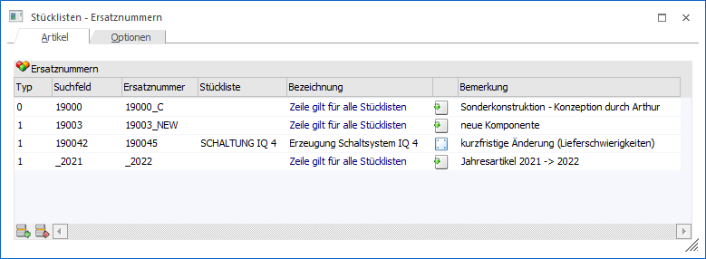

In dem Register "Artikel" kann definiert werden, welche Stücklistenkomponenten durch welche ersetzt werden sollen und zu welchem Zeitpunkt dieses zu geschehen hat.
Achtung
Neben der Angabe von Artikelnummern ist es auch möglich Bestandteile einer Artikelnummer anzugeben, welche ersetzt werden sollen (siehe Feld "Ersatzartikel").

In der Tabelle werden alle Ersetzungen, die bei dem aktuellen Benutzer gelten, aufgeführt. Die Ersetzungen werden in der Folge von "oben nach unten" abgearbeitet, wodurch auch verschachtelte Ersetzungen möglich sind. Folgende Spalten stehen in der Tabelle "Ersatznummern" zur Verfügung:
Ø Typ
In der ersten Spalte der Tabelle kann hinterlegt werden, wann bzw. für wenn der Ersatz gilt. Folgende Varianten stehen zur Verfügung:
ü 0 - Bei Anlage (nur für aktuellen
Benutzer)
Wenn ein PPS-Auftrag vom aktuellen Benutzer neu angelegt wird, so
wird die Ersetzung durchgeführt.
ü 1 - Bei Anlage (alle
Benutzer)
Wenn ein PPS-Auftrag neu angelegt wird, so wird die Ersetzung
durchgeführt. Welcher Benutzer die Anlage durchführt ist irrelevant.
ü 2 - nach Ausprägungen übernehmen
(nur für aktuellen Benutzer)
Wurde in den PPS-Parametern (Bereich
"Produktionsauftragsanlage") die Option "Ausprägungen übernehmen" aktiviert, so
erfolgt bei der Produktionsvorbereitung bzw. beim Produktionsauftrag einlesen
die automatische Übertragung der Ausprägung(en) vom Produktionsartikel (inkl.
Verhältnis zur Gesamtproduktionsmenge) an die Komponenten. In diesem Zuge wird
für den aktuellen Benutzer die hinterlegte Ersetzung durchgeführt.
ü 3 - nach Ausprägungen übernehmen
(für alle Benutzer)
Wurde in den PPS-Parametern (Bereich
"Produktionsauftragsanlage") die Option "Ausprägungen übernehmen" aktiviert, so
erfolgt bei der Produktionsvorbereitung bzw. beim Produktionsauftrag einlesen
die automatische Übertragung der Ausprägung(en) vom Produktionsartikel (inkl.
Verhältnis zur Gesamtproduktionsmenge) an die Komponenten. In diesem Zuge wird
bei allen Benutzern die hinterlegte Ersetzung durchgeführt.
Achtung
Die Zeilen des Typs "0 - Bei Anlage (nur für aktuellen Benutzer)" und "2 - nach Ausprägungen übernehmen (nur für aktuellen Benutzer)" werden nur den jeweiligen Benutzern angezeigt.
Ø Suchfeld
In dieses Feld wird die zu ersetzende Stücklistenkomponente hinterlegt.
Ø Ersatznummer
An diese Stelle wird der Ersatzartikel hinterlegt. D.h. der Artikel aus dem Feld "Suchfeld" wird durch den Artikel im Feld "Ersatznummer" ersetzt / ausgetauscht.
Beispiel
Ein "Platzhalter"-Artikel ist in einer Stückliste als Komponente hinterlegt, welcher bei der Erfassung von Aufträgen kundenspezifisch mit einem entsprechenden Ersatzartikel manuell ausgetauscht werden soll.
Dieser Vorgang kann mit "Stücklisten - Ersatznummern" automatisiert werden, wenn z.B. mehrere Aufträge für den gleichen Kunden hintereinander eingeben werden sollen. Es wird dadurch vorübergehend (und benutzerspezifisch) der Platzhalterartikel mit dem Ersatzartikel automatisch ausgetauscht.
Achtung
Es können nicht nur angelegte Artikelnummern erfasst werden, sondern auch Bestandteile. D.h. wenn es z.B. Jahresartikel mit der Endung "_2021" gibt, welche nun durch "_2022" ersetzt werden sollen, so ist dieses möglich (aus dem Artikel "190053_2021" wird somit "190053_2022".
Ø Stückliste
In dieser Spalte kann definiert werden bei welcher Stückliste der Ersatz erfolgen soll. Wird keine Stückliste angegeben, dann gilt der Ersatz für alle Stücklisten.
Ø Bezeichnung
Wurde eine spezielle Stückliste in der Spalte "Stückliste" angegeben, so wird hier die entsprechende Bezeichnung angezeigt. Ansonsten wird der Text "Zeile gilt für alle Stücklisten" ausgewiesen.
Ø Bemerkung
In der Spalte kann eine individuelle Bemerkung zu der Ersatzzeile erfasst werden.
Tabellenbuttons

Ø Zeile einfügen
Durch Anklicken dieses Buttons kann oberhalb der aktiven Ersatzzeile eine weitere Ersatzzeile eingefügt werden.
Ø Zeile entfernen
Durch Anklicken dieses Buttons wird die aktive Ersatzzeile gelöscht.
Ø Ausgabe Excel
Durch Anwahl des Buttons "Ausgabe Excel" wird der Inhalt der Tabelle an Microsoft Excel übergeben.
Ø Tabelleneinstellungen speichern
Die Spalten einer Tabelle können grundsätzlich an beliebige Positionen verschoben, bzw. in der Breite entsprechend angepasst werden. Durch Anwahl des Buttons "Tabelleneinstellungen speichern" werden die Einstellungen benutzerspezifisch gespeichert und bei dem nächsten Aufruf des Programmpunktes wieder vorgeschlagen.
Ø Gesamteinstellungen speichern…
Im Gegensatz zu "Tabelleneinstellungen speichern" können mit "Gesamteinstellungen speichern" mehrere Tabellenaufbauten gespeichert und nach Wunsch geladen werden. Zusätzlich werden Sonderfunktionen der Tabelle (z.B. "Spalte gruppieren") ebenfalls bei der Speicherung bedacht.